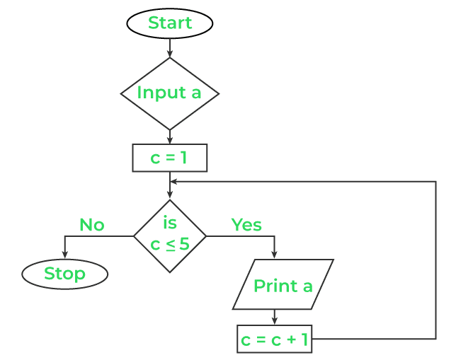

Programming concepts and logics (C language)
Programming Concepts
Programming Language
In order to make communication between user and computer, we need a computer language that helps the user to generate commands to perform as per the requirement. This language with which we can give instructions to the computer is known as programming language. Programming languages are the set of different keywords, variables, operators, loops, and other entities using different character sets including numbers, special symbols, and alphanumeric values.
Hence, the process of writing the programming language is known as programming, and the person who writes programs is called a programmer.
Types of Programming Languages
- Low Level Language:
-
Low level languages are machine-dependent languages which means programs written for one type of system cannot be run on another system. Developers should have detailed knowledge about the system for which they are going to write a program. Hence, programming in low level languages is very difficult and time-consuming. Different types of low level languages are:
- Machine Level Language (1GL):
-
This language consists of a sequence of 0’s and 1’s to generate instructions. Since it uses binary numbers, this type of language is directly understood by the processor, resulting in higher execution speed.
Advantages:
- Directly understood by the processor, resulting in high execution speed.
- No language translator or processor is needed.
- Can be used to program specific-purpose computers.
Disadvantages:
- Difficult and time-consuming to develop and debug programs.
- Machine-dependent; programs developed for one system cannot operate on another.
- All syntax and commands in binary form are difficult to remember.
- Programmers must have detailed knowledge about the specific system and its architecture.
- Assembly Language (2GL):
-
Assembly language uses mnemonics (symbolic instructions) like ADD, SUB, RST, DIV, MOD, instead of writing instructions in binary. This language is faster than high level languages but requires knowledge of the computer's internal architecture.
Advantages:
- Easier to write, debug, and understand compared to machine level language.
- Higher program execution speed compared to high level languages.
- Machine-dependent, used to develop different device drivers.
Disadvantages:
- Machine-dependent; programs made for one processor won’t run on another.
- Use of mnemonics makes assembly language complex.
- Development and debugging are more difficult and time-consuming compared to high level languages.
- High Level Language:
-
High level languages are closer to English and are written using mathematical notation. They are machine-independent, meaning programs developed for one processor can run on another. Examples include C, C++, Python, and JavaScript.
Advantages:
- Easier to write, debug, and understand due to English-like syntax.
- Machine-independent; programs can work on different processors.
- No need to remember unusual mnemonics or codes.
- Faster program development requiring less effort.
Disadvantages:
- Computers do not understand high level languages directly; conversion is needed before execution.
- Execution is slower compared to low level languages.
Classification of High Level Languages:
- Procedural Oriented Language (3GL):
-
Focuses on procedures rather than data, expressing logic and procedures of the program. Examples include C, FORTRAN, and QBasic.
Advantages:
- Easier program development and debugging compared to low level languages.
- General-purpose programming capability.
Disadvantages:
- Language processor required for execution.
- Execution is slower than other languages.
- Problem/Object Oriented Language (4GL):
-
Focuses on data rather than procedures, allowing users to specify output without describing how to manipulate data. Examples include C#, C++, and Java.
Advantages:
- Enables development of web-based applications.
Disadvantages:
- Language translator required for execution.
- Natural Language (5GL):
-
Uses simple statements resembling normal sentences. Currently, programming languages like PROLOG are in use.
Advantages:
- Easier program development and debugging.
Disadvantages:
- Requires a language translator for execution.
Language Translator/Processor
A language translator is system development software that helps convert programs written in assembly or high-level language (source program) into machine-level language (object program). Since it is difficult and inconvenient to write a program in machine-level language, developers use assembly and high-level languages that are not directly understood by the computer. Therefore, we use different types of language processors to convert and make them machine understandable.
Types of Language Translators
- Assembler:
-
Assemblers convert programs written in assembly language (source program) into machine-understandable language (object language). Since assembly language is closer to machine-level language, the conversion performed by an assembler is relatively quick and efficient. It converts the entire program at once into machine-level language.
- Compiler:
-
Compilers convert programs written in high-level language (source program) into machine-level programs (object program). They translate the entire program at once, making it the most extensive method of program translation. Debugging in this method can be complex and time-consuming. Programming languages like C, C++, and Java use compilers.
- Interpreter:
-
Interpreters convert programs written in high-level language (source program) into machine-level language (object program) one statement at a time. This makes debugging easier and less time-consuming. However, execution speed is slower compared to compilers. Many new programming languages use interpreters, which allocate less memory space. Examples include BASIC, C#, and PHP.
Difference Between Compiler and Interpreter
| Compiler |
Interpreter |
| It translates the whole program into object code at a time. |
It translates one line or a single statement of a program into object code at a time. |
| It finds out the error after compiling the complete program. |
It finds out the error after translating a line of the program at a time. |
| The translating process is incredibly faster. |
The translating process is slower. |
| Compiler-based programming is difficult to code and debug. |
Interpreter-based programming is easy to code and debug. |
| It is usually a large program and requires larger memory space. |
It is usually a smaller program and requires less memory space. |
| New programming language doesn’t use compiler. |
New programming language commonly uses interpreter. |
| For e.g.: C, C++, Java, FORTRAN etc. |
For e.g.: BASIC, C#, PHP etc. |
Syntax and Semantics
As we know, programming languages help the user communicate with the computer. Users are governed by several sets of codes which instruct the computer to perform specific tasks. This set of codes and its structure is known as syntax. In addition, semantics refers to the meaning attached to individual words or symbols in a programming language. For example:
div>
In QBasic:
Print "This is programming"; P
Here, Print represents semantics, and the whole line represents structure (syntax).
Error (BUG)
There may be several errors inside a program that stop it from being executed. Thus, an error in a program is known as a bug. This type of error may arise from not following the proper rules of the programming language, poor problem analysis, or hardware failure. Errors in the program may yield ambiguous (not accepted/false) results. The process of removing errors from a computer program is known as debugging. There are three types of errors:
- Syntax Error:
-
This error arises from not following the proper rules or format given by the programming language. Every programming language has its own vocabulary, punctuation, and structure. Programmers need to follow every detail while programming. This type of error can be detected by language processors such as compilers and interpreters. For example, in C, every statement should end with a semicolon. If this rule is not followed, the error encountered is a syntax error.
- Logical Error:
-
Logic refers to the idea or concept used to solve a specific problem. If the problem is poorly understood, it may hamper the ability to solve it. The error encountered due to poorly developed logic is called a logical error. This type of error is not detected by the language processor. For example: to calculate simple interest, we use the formula I = (P * T * R) / 100. If we mistakenly write I = P * T * R, the error encountered is a logical error.
- Runtime Error:
-
When a program is running or executing, it is said to be runtime. Hence, the errors encountered while the program is being executed are known as runtime errors. These errors are also not detected by language translators. For example, if there is insufficient memory space or a peripheral device is not turning on, a runtime error occurs.
Common Terminology in Programming
Data Types
Data types specify the type of data to be used in a program. Some common types of data types are:
- Numeric:
- It includes all positive and negative whole numbers, including zero.
- Character:
- It encompasses all alphanumeric values, including special symbols.
Variable and Constant
- Variable:
- Entities that hold either numeric or alphanumeric values and can change their value throughout the program execution.
- Constant:
- Entities that hold either numeric or alphanumeric values but do not change their value during program execution.
Operands, Operators, and Operations
Let us consider:
S = A + B
Where:
div>
- S, A, B are operands.
- +, = are operators.
The expression S = A + B denotes the sum of two operands, A and B, which is an operation.
Types of Operators
Operators are special symbols that facilitate operations. Commonly used operators include:
Arithmetic Operators:
+, -, /, *
Relational Operators:
<, >, >=, <=, =
Logical Operators:
AND, OR, NOT
Program Design Tool
There are several program design tools available. Some commonly used program design tools are algorithms, flowcharts, and pseudocode.
Algorithm
The step-by-step procedure or sequential steps for solving a specific problem is known as an algorithm. Algorithms are written in simple English and are not closely related to any programming language.
Rules for Writing Algorithms:
- Algorithms should produce output after a finite number of steps.
- Algorithms should not depend on any specific programming language.
- Algorithms should terminate after a finite number of steps.
Flowchart
A flowchart is a diagrammatic or pictorial representation of the steps involved in an algorithm for solving a particular problem. It uses several geometrical shapes and symbols to represent different actions involved in problem-solving.
Types of Flowchart
- Program Flowchart:
-
This type of flowchart focuses on a specific problem and portrays only a single task (logic) at a time.
Symbols Used in Flowchart
Flowcharts utilize various symbols to denote different types of actions. Common symbols include:
- Oval: Represents the start or end of a process.
- Rectangle: Indicates a process or action step.
- Diamond: Represents a decision point (yes/no question).
- Arrow: Shows the flow of the process.
- Parallelogram: Used for input/output operations.

- What is a programming language, and why is it important for user-computer communication?
- Describe the differences between low-level languages and high-level languages.
- What are the advantages and disadvantages of using machine-level language?
- Explain the roles of assemblers, compilers, and interpreters in programming.
- What are the main differences between a compiler and an interpreter?
- Define syntax and semantics in the context of programming languages.
- What are the three types of errors commonly encountered in programming? Provide examples for each.
- Explain the significance of data types in programming and list some common data types.
- What is the difference between a variable and a constant?
- Describe the purpose of operands and operators in programming, providing examples.
- What are the commonly used types of operators in programming?
- Define an algorithm and list the rules for writing a good algorithm.
- What is a flowchart, and how is it used in program design?
- Identify and explain the symbols commonly used in flowcharts.